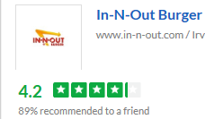
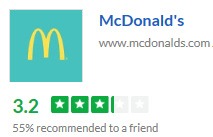
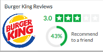

| In N Out | Mc Donald's | Burger King |
|---|---|---|
|  |  |  |
| "In N Out is the "same" in terms of employees, cleanliness, courtesy, and quality. I'm yet to meet an employee with a rude attitude or someone who loses patience with such a specific order such as my own." | "Worse food ever. My order was wrong the meat was hard. And my fries were cold." | "Been coming here for years until today I found some sort of glass particle fall from my son cheeseburger" |
| "100% beef patties good food fast fresh made to order and we love it. The burgers don't need salt at all and are consistently good" | "I mean..it's McDonlad's...nothing awful and nothing great BUT just ordered large fries through the drive through and I really should have ordered a small because the amount of fries they gave didn't fill it to the top" | " I ordered some onion rings and I must tell you they were hard as a rock. You would think they would make some fresh ones after a while. I guess they pay their workers to be lazy." |
| "You know the food is freshly made when you go to the drive through and see the workers cutting the lettuce and the tomatoes." | "First off they have two lanes for ordering, so everyone tries to cut you off so they can get their order first. And when you finally get to the window they ask you to pull to another parking spot to wait for your order." | "The food was normal burger King food but there were dirty tables everywhere and it was very uncomfortable to even sit there and eat." |